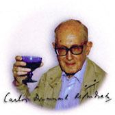
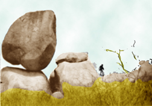
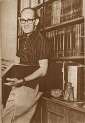

← de regreso a No Meio do Caminho
como apareció en La Jornada Semanal, suplemento cultural de La Jornada, no. 268, México, 23 de abril de 2000, p. 6.
En 1986, la Escuela de samba Mangueira dedicó su enredo a Drummond de Andrade. Por el Sambódromo construido por Niemeyer desfilaron los personajes del poeta: el elefante, Chaplin, Ze Pereira, Don Quijote y hasta la "pedra no meio do caminho". Así despidió Río de Janeiro al autor de tantos poemas-piadas (poemas-broma) y erótico-sexuales, así como de la división de sus contemporáneos en "dos categorías mentales" (nunca dijo cuáles eran éstas, pero todos conocían su "multiforme conciencia crítica"). Dice Rodolfo Mata que Mário de Andrade contagió su nacionalismo a Drummond, pero que el poeta lo adaptó a su estilo y lo convirtió en "un regreso a la objetividad de las cosas" y en un olvido de la peligrosa exaltación patriótica.

Con el paso del tiempo, un incidente fundacional en la carrera literaria de Carlos Drummond de Andrade (1902-1987) se ha convertido en una fábula medular de la historia de la poesía brasileña contemporánea. Cuando el poeta publicó "No meio do camino" -en el número tres de la Revista de Antropofagia (julio de 1928)-, seguramente no imaginó que lanzaba una verdadera "piedra de toque" en el desarrollo de la poesía brasileña:
"No meio do caminho tinha uma pedra
tinha uma pedra no meio do caminho
tinha uma pedra
no meio do caminho tinha uma pedra.Nunca me esquecerei desse acontecimento
na vida de minhas retinas tão fatigadas.
Nunca me esquecerei que no meio do caminho
tinha uma pedra
tinha uma pedra no meio do caminho
no meio do caminho tinha uma pedra."
Si Mário de Andrade le había comentado por carta, en 1924, que el poema era formidable y que le parecía un ejemplo fuerte, bien logrado y "psicológico" (las inclinaciones de Mário por ese tipo de análisis fueron frecuentes) del "cansancio intelectual", cuando apareció en la provocadora revista, los elogios no se repitieron, aunque tampoco hubo repudios, como los que se verían después, sino que más bien el poema pasó un tanto desapercibido. El clima belicoso de la llamada "fase heroica" del Modernismo -la vanguardia brasileña que llevó a cabo la ruptura frontal con los cánones estéticos anteriores- se había entibiado un poco: el uso de manifiestos comenzaba a declinar, el desparpajo del poema piada (poema-broma) había perdido parte de su prestigio original y, como Mário señalaría más tarde, se acercaba la hora en que la fase de destrucción cedería su lugar a un ciclo constructivo.
Drummond estaba consciente de esta situación y por ello su primer libro llevaría el modesto título de Alguma poesia (1930). No sólo le parecían innecesarios los gestos de ruptura grandilocuentes en el panorama poético del momento sino que tenía la certeza de que el lugar del poeta en el mundo moderno es marginal.
"Impossível compor um poema a essa altura da evolucao da humanidade.
Impossível escrever um poema -uma linha que seja- de verdadeira poesia"
nos dice al principio de "O sobrevivente", para rematar con:
"Inabitável, o mundo é cada vez mais habitado.
E se os olhos reaprendessem a chorar seria um segundo dilúvio.
(Desconfio que escrevi um poema).
Esta mezcla de ironía y humor, templados por la amargura y la resignación, ya está presente en Alguma poesia, al lado de otros rasgos típicamente modernistas como el mencionado poema-piada
("E preciso fazer um poema sobre Bahia...
Mas eu nunca fui lá"),
el verso libre, el prosaísmo, los temas "no poéticos", las "imágenes novedosas", etcétera. De tal manera, este libro nace siendo un punto de inflexión en la poesía brasileña, no sólo por el genio creativo de Drummond sino porque, como dice Wilson Martins, surge en un ambiente de "revolución estabilizada" en el que, agregaría, el poeta puede buscar más tranquilamente su propio camino.
Pero entonces, regresando a "No meio do caminho", ¿cómo se dio la polémica que desató este poema, según consignan casi todas las referencias a la obra de Drummond, por más escuetas que sean? La historia del poema da pedra, como llegó a ser conocido, se inició realmente con su inclusión en Alguma poesia, fue revisada ampliamente en Uma pedra no meio do caminho. Biografia de um poema (selección y edición de Drummond de Andrade y estudio de Arnaldo Saraiva) y continúa rindiendo frutos como un fenómeno de gran riqueza no sólo en la historia de la poesía brasileña sino en la de la crítica literaria. Según Arnaldo Saraiva, la publicación del poema da pedra en libro, en 1930, provocó adhesiones y repulsas, aunque raros ataques por escrito. Uno de los más graciosos es la parodia del indignado Gondin da Fonseca, que se quejó de que ya no había rima y que cualquier incidente podía producir un poema y "papagayó" cuatro o cinco veces lo mismo:
"Eu tropecei agora numa casca de banana.
Numa casca de banana!
Numa casca de banana eu tropecei agora,
Caí pra trás desamparadamente,
E rasguei os fundilhos das calcas!
Numa casca de banana eu tropecei agora.
Numa casca de banana!
Eu tropecei agora numa casca de banana!"
De hecho, esta es una muestra de los deseos de restauración del "orden" en la "Poesía" que más tarde fueron propugnados por la llamada Generación del 45. La "Generación del 45" es un concepto tan problemático en la historia de la literatura brasileña como el papel de "No meio do caminho". En él se mezclan criterios temporales, de preferencias estéticas y de política literaria pues, como apunta Joao Cabral de Melo Neto, no fue un movimiento, y entre sus supuestos integrantes, incluyéndose a él mismo, había grandes diferencias. En ocasiones, tales deseos llegaron a excesos preceptivistas, como los expresados por Domingos Carvalho da Silva, según refiere Sérgio Buarque de Holanda: el buen verso no debe contener palabras esdrújulas; la palabra "fruta" debe ser desterrada de la poesía en favor de "fruto", al igual que "cachorro" en favor de "cao"; y el Océano Indico es "más poético" que el Pacífico. De ahí que las acusaciones más frecuentes a "No meio do caminho" sigan esa línea:

Para la década de los cuarenta, los elogios y ataques se intensifican -refiere Saraiva- por varias causas:
De hecho, esta avalancha de opiniones fue la que llevó a Drummond a armar Uma pedra no meio do caminho. Biografia de um poema. Necesitaba poner en claro esta confusión que lo mantenía un tanto amargado, y exponer su punto de vista, al lado de las reacciones contemporáneas a su aparición y las impresiones que circulaban. De esta manera, dice Antonio Houaiss, se integró un documento ejemplar de la sociología del gusto literario, en torno a la poesía moderna en Brasil. En esta "biografía", Drummond afirma que su famoso poema "nao pretende expor nenhum fato de ordem moral, psicológica ou filosófica" y que solamente quería "dar a sensacao de monotonia e chateacao, a come ar pelas palavras" (con lo cual confirma la apreciación inicial de Mário de Andrade). Según el autor, el poema había servido hasta esas fechas "para dividir no Brasil as pessoas em duas categorias mentais". Aunque nunca dijo cuáles eran éstas, no hay duda de que el fenómeno de división se había dado y que el poema albergaba una conciencia crítica multiforme. Es decir, aunque no se supiera con exactitud qué entrañaba, se percibía que había algo profundamente crítico que inquietaba y abría la posibilidad a múltiples interpretaciones.

"No meio do caminho" fue un exabrupto modernista genial. Ya con anterioridad Drummond se afiliaba a la praxis modernista de violentar la sintaxis, practicar el verso libre, el coloquialismo y el poema-piada, además de que Mário de Andrade le había contagiado su nacionalismo. Sin embargo, el nacionalismo drummondiano no resultó ser de exaltación sino de regreso a la objetividad de las cosas. En una de sus tempranas colaboraciones en A Revista, el poeta ya apuntaba: "Agora, o escritor foge de teorias e construcoes abstratas para trabalhar a realidade com maos puras", observación que recuerda el "ver com olhos livres" del Manifesto da Poesia Pau-Brasil de Oswald de Andrade. En otra oportunidad afirma: "Nao podemos oferecer nenhuma permeabilidade aos produtos e detritos das civilizacoes estrangeiras." Es aquí donde encaja la "teoría del cansancio". La solución no estaba en complicados manifiestos ni en importaciones (o en su contraparte: los exotismos de exportación), sino en el cotidiano brasileño y su lenguaje, en el regreso a las cosas, en el nacionalismo "con signo de menos". Esto explica que la otra piedra que se atravesó constantemente en el camino de Drummond haya sido Itabira, ciudad del estado de Minas Gerais donde nació: en tupi, lengua indígena presente en gran parte de los toponímicos brasileños, "itá"" significa "piedra", e "itá-bira"" quiere decir "piedra levantada o empinada".